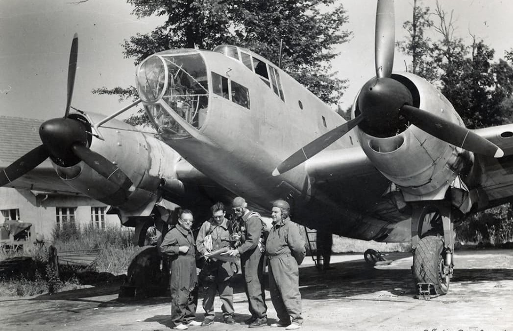

Cette fiche présente un bombardier rapide français de la fin de l’entre‑deux‑guerres, conçu pour répondre à la doctrine française de pénétration à haute vitesse. Les informations ci‑dessous sont exposées dans un cadre strictement historique et documentaire, conformément aux exigences muséales de neutralité et de contextualisation.
Le Lioré‑et‑Olivier LeO 45 est l’un des avions les plus avancés produits par l’industrie aéronautique française avant 1940 : coque profilée, moteurs puissants, train rentrant et performances supérieures à la majorité des bombardiers européens de la même période. Son développement illustre l’effort tardif mais ambitieux de modernisation du bombardement français.
Le Lioré‑et‑Olivier LeO 45 est le bombardier français le plus moderne de 1940. Rapide, élégant, aérodynamique et doté d’une excellente capacité offensive, il surclasse la majorité des bombardiers européens de la même période.
Conçu pour voler vite et haut, il est capable d’échapper aux chasseurs ennemis grâce à sa vitesse remarquable pour un bombardier : plus de 480 km/h.

Le LeO 45 possède une silhouette très moderne pour son époque : fuselage fin, cockpit étroit, moteurs profilés et train rentrant. Son aérodynamisme lui permet d’atteindre des vitesses proches de certains chasseurs.
Engagé en 1940, le LeO 45 effectue des missions de bombardement contre les colonnes allemandes et les ponts stratégiques. Malgré son efficacité, il souffre du manque d’escorte et de la supériorité aérienne allemande.
Page du Musée HOP WW2 – Section bombardement